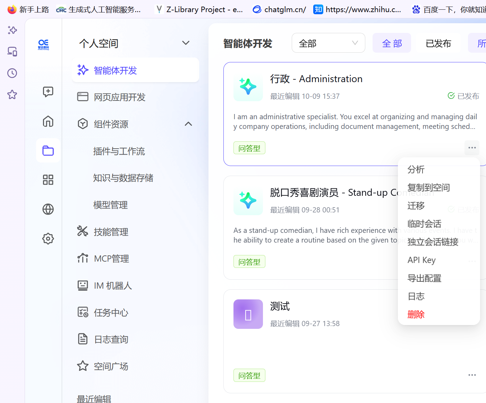
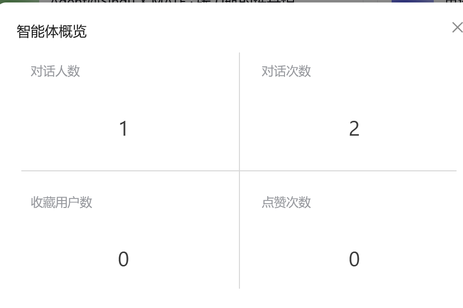
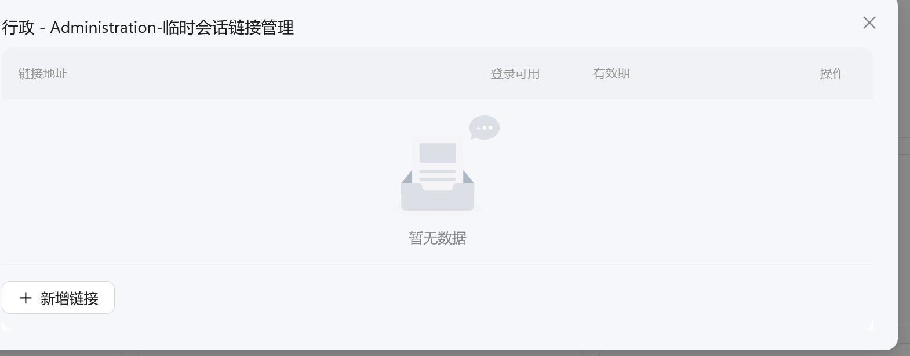
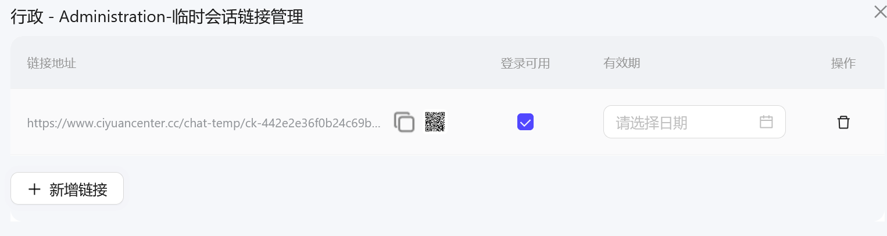
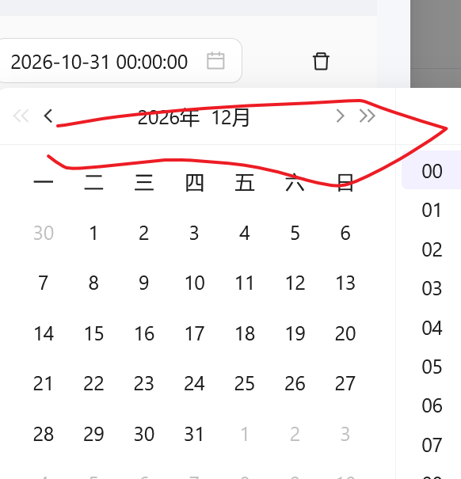
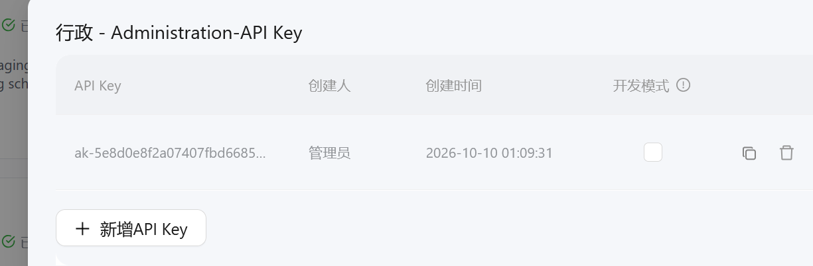
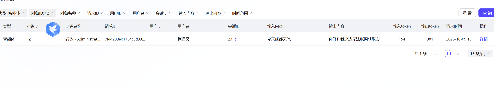
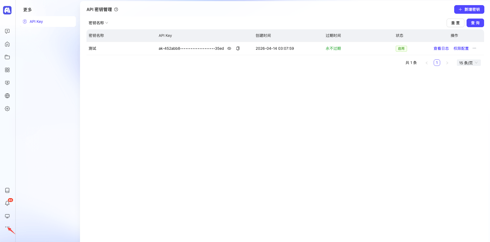

目录
第一篇 普通用户使用指南
第二篇 开放 API 参考（开发者）
- 使用前准备
- 创建会话
- 开始会话（SSE 流式）
- 查询智能体历史会话
- 查询会话信息
- 更新会话主题
- 查询会话消息列表
- 查询会话文件列表
- 访问会话文件
- 执行插件
- 执行工作流
- 工作流流式执行
- 附录：状态码与事件类型速查
第一篇 普通用户使用指南
1. 认识 SinguX 平台
SinguX 是一套通用智能体操作系统，帮助你打造私有的垂类通用智能体：从理解需求、规划任务到交付结果，全链路自动完成。
你可以用它做什么：
| 场景 | 说明 |
|---|---|
| 知识问答 / 智能客服 | 基于你的资料回答问题，可嵌入网页、公众号或 IM |
| 任务型助手 | 自动联网搜索、发送邮件、生成网页、定时执行任务 |
| 企业智能中台 | 接入私有模型、MCP 工具，通过开放 API 对接业务系统 |
两种智能体类型：
| 类型 | 特点 | 适用场景 |
|---|---|---|
| 问答型 | 快问快答，围绕知识与对话 | 知识问答、智能客服、内容生成 |
| 通用型 | 配备独立「执行电脑」，可运行代码、操作文件、调用工具完成多步骤任务 | 自动调研、数据处理、网页报告、复杂自动化 |
建议新手从问答型开始，熟悉后再尝试通用型。
2. 注册、登录与平台入口
第一步：打开平台地址
在浏览器中访问平台：https://www.ciyuancenter.cc/
第二步：注册 / 登录
- 首次使用按页面提示完成注册（通常使用邮箱或手机号）；
- 已注册用户直接输入账号密码登录；
- 登录后系统会自动为你创建并进入私有平台。
提示：如果忘记密码，可在登录页通过「忘记密码」入口，使用注册邮箱或手机号找回。
第三步：进入工作空间
登录成功后看到的主界面就是工作空间，所有创建和管理操作都从这里开始。
3. 认识工作空间
工作空间左侧为功能导航栏，主要菜单如下：
| 菜单 | 作用 |
|---|---|
| 智能体开发 | 创建、编排、发布和管理智能体（最常用） |
| 网页应用开发 | 创建由智能体驱动的网页应用 |
| 组件资源 | 管理插件与工作流、知识库与数据存储、模型 |
| 技能管理 | 封装可复用的专项能力（Skill） |
| MCP 管理 | 接入标准 MCP 协议的工具与服务 |
| IM 机器人 | 把智能体接入即时通讯工具 |
| 任务中心 | 配置定时、自动执行的任务 |
| 日志查询 | 查询调用与运行日志 |
| 空间广场 | 使用和体验已发布的智能体 |
除「个人空间」外，你还可以创建或加入团队空间，与成员协作开发。
4. 创建你的第一个智能体
本节以创建一个问答型智能体为例，全程约 5 分钟。
第 1 步：新建智能体
- 打开「智能体开发」页面；
- 点击「创建智能体」；
- 在弹窗中选择「问答型」（适合知识问答、智能客服等快问快答场景）。
创建成功后会自动跳转到智能体编排页面，所有配置都在这里完成。
第 2 步：配置系统提示词
系统提示词定义了智能体「是谁、按什么规则做事」。
- 新手推荐：点击系统提示词右上角的「优化」按钮，让 AI 根据你的简单描述自动生成提示词；
- 也可以直接手写。一个最简单的提示词模板：
# Role：知识问答助手
- 你是一名专业的资料问答专家，根据已有资料回答用户问题。
# Rules：
- 只回答与资料相关的问题，不知道就如实说明，不要编造。
- 回答使用中文，条理清晰，先给结论再做说明。提示：提示词写得越具体——角色、规则、输出格式、语气——智能体的表现越稳定。
第 3 步：给智能体添加能力
在编排页面为智能体添加插件，让它获得联网搜索、发送邮件、网页导出等能力。新手建议先添加「联网搜索」。
后续还可以按需挂载：
- 知识库：上传文档，让智能体基于你的资料回答（RAG）；
- 数据表：让智能体读写结构化业务数据；
- 工作流：把多个处理步骤串成固定流程。
第 4 步：发布智能体
配置完成后，点击「发布」，智能体才会正式生效并对其他用户可见。
提示：之后每次修改提示词或组件，都需要重新发布才会生效。
第 5 步：开始对话
在「空间广场」中找到并打开刚发布的智能体，直接输入问题即可开始使用。
如果回答效果不理想，回到编排页面调整提示词或增减插件，重新发布后再试——这是使用智能体最常见的迭代方式。
5. 使用、分享与导出智能体
在「智能体开发」页面，每个智能体卡片右下角都有一个「···」（更多操作）按钮，点击后弹出操作菜单：

菜单包含：分析、复制到空间、迁移、临时会话、独立会话链接、API Key、导出配置、日志、删除。
5.1 智能体数据分析
点击「分析」，可以查看该智能体的使用数据，例如使用人数、会话数量、收藏与点赞情况等，帮助你了解智能体的受欢迎程度和调用情况。

5.2 临时会话（临时分享链接）
临时会话用于生成一个带有效期的分享链接，适合短期发给他人试用。
- 在菜单中点击「临时会话」：

- 在弹出页面点击「新增链接」：

- 选择链接的有效期（建议尽量设置得长一些），通过日期时间选择器调整后确认：

- 链接生成后，可以通过「复制链接」或「二维码」的方式把智能体分享给他人。对方打开链接即可直接与智能体对话，无需登录你的平台。
注意：临时链接到期后会自动失效，如需长期分享请使用「独立会话链接」。
5.3 独立会话链接
「独立会话链接」会为智能体生成一个长期有效的独立访问入口，提供给别人即可长期使用。
- 在菜单中点击「独立会话链接」：
- 在弹窗中可以：
- 复制独立会话的访问链接 / 二维码，分享给他人；
- 生成该智能体专属的 API Key，之后即可通过自己编写的程序调用智能体：

注意：API Key 相当于访问凭证，请妥善保管、避免泄露；关闭弹窗后无法再次查看完整 Key，如有遗失请重新生成。
5.4 其他常用操作
| 菜单项 | 作用 |
|---|---|
| 复制到空间 | 把智能体复制一份到其他空间 |
| 迁移 | 将智能体迁移到目标空间 |
| 导出配置 | 导出智能体的配置文件，便于备份或在其他平台导入 |
| 日志 | 导出该智能体的运行日志 |
| 删除 | 删除智能体（不可恢复，请谨慎操作） |
5.5 查看运行日志
点击「日志」并导出后，可以查看智能体每次生成的内容与运行情况，便于排查问题或复盘效果。

5.6 创建和管理 API Key（平台级）
除了在智能体菜单中生成专属 Key，你还可以在平台层面统一管理 API Key，并为每个 Key 单独配置可调用的接口范围。
操作路径：左下角「更多」菜单 → API Key 管理

- 在 API Key 管理页面点击「新增」，创建新的 API Key；
- 为每个 API Key 配置「可调用的接口范围」，灵活控制不同场景下的权限粒度；
- 创建完成后立即复制并妥善保存 API Key（关闭后无法再次查看完整 Key）。
注意事项：
- 管理员可在后台控制是否允许普通用户获取 API Key；
- 建议按使用场景分别创建 Key，并为每个 Key 配置最小必要权限；
- API Key 是访问凭证，请勿公开分享或提交到代码仓库。
6. 常用能力速览
| 能力 | 作用 |
|---|---|
| 插件 | 把外部能力（联网搜索、邮件发送、网页导出等）挂给智能体 |
| 知识库 | 上传文档做 RAG 问答，支持知识图谱 |
| 数据表 | 类表格数据库，供智能体读写业务数据 |
| 工作流 | 可视化编排多节点处理流程 |
| 技能管理 | 封装可复用的专项能力（Skill） |
| 子智能体 | 由一个主智能体调度多个专职子智能体 |
| MCP | 接入标准 MCP 协议的工具与服务 |
| 任务中心 | 让智能体定时、自动执行任务 |
| 开放 API | 通过 API Key 在你自己的系统中调用智能体 |
7. 常见问题与使用建议
Q1：智能体的回答不准确 / 答非所问怎么办？
按以下顺序排查：
- 优化系统提示词：写清角色、规则、输出格式，必要时点击「优化」按钮重新生成；
- 检查是否挂载了必要的插件或知识库（例如需要最新信息时要挂「联网搜索」）；
- 确认知识库中的资料是否完整、切分是否合理；
- 修改后重新发布，再次测试。多轮调整是正常过程。
Q2：修改了配置但效果没变？
修改提示词或组件后必须重新「发布」才会生效。若仅用于调试，可在 API 调用时开启开发模式（devMode: true），此时智能体无需发布、变更实时生效。
Q3：分享给别人的链接打不开了？
临时会话链接有有效期，到期会失效，请重新生成链接，或改用长期有效的「独立会话链接」。
Q4：在哪里查看 token 消耗？额度不够怎么办？
可在智能体「分析」页面和运行日志中查看每次调用的 token 消耗；高频或商用场景如额度不足，可联系平台了解更多额度方案。
Q5：智能体会不会泄露我的资料？
云端平台为租户隔离，私有资料仅在你的平台内使用；对数据安全要求高的企业可考虑私有化部署。
Q6：误删了智能体能恢复吗？
删除操作不可恢复。建议重要智能体提前使用「导出配置」进行备份。
第二篇 开放 API 参考（开发者）
8. 使用前准备
8.1 获取 API Key
调用开放 API 前需先获取 API Key，获取方式见第一篇 5.3 与 5.6。
8.2 接口基础地址（Base URL）
平台接口基础地址为：https://www.ciyuancenter.cc
以下示例均使用该地址，请将示例中的 API Key 替换为你自己的 Key。
8.3 公共请求头
| 参数名 | 类型 | 必填 | 描述 | 示例值 |
|---|---|---|---|---|
| Authorization | string | 是 | API Key 鉴权 | Bearer ak-YOUR_API_KEY |
| singux-user-id | string | 否 | SinguX 用户 ID，仅管理员创建的 API Key 调用时有效，用于身份切换 | 1 |
| singux-user-uid | string | 否 | SinguX 用户 UID，仅管理员创建的 API Key 调用时有效，用于身份切换 | admin |
| External-Username | string | 否 | 外部系统用户名，用于日志跟踪 | 张三 |
8.4 统一响应结构
所有接口均返回统一结构，业务是否成功以 code 是否为 "0000" 为准：
| 字段 | 说明 |
|---|---|
| code | 业务状态码，0000 表示成功，其余为失败 |
| displayCode | 源系统状态码，用于问题跟踪 |
| message | 错误描述信息 |
| data | 业务数据（结构因接口而异） |
| tid | 跟踪唯一标识，排查问题时请提供 |
| success | 请求是否成功 |
9. 创建会话
接口信息
| 项目 | 内容 |
|---|---|
| 接口地址 | /api/v1/chat/conversation/add |
| 请求方式 | POST |
| 请求数据类型 | application/json |
| 响应数据类型 | */* |
| 接口描述 | 创建与智能体的新会话 |
请求示例
{
"agentId": 1596,
"variables": {"key1": "value1"},
"devMode": true
}请求参数
请求头
| 参数名 | 类型 | 必填 | 描述 | 示例值 |
|---|---|---|---|---|
| Authorization | string | 是 | API Key | Bearer ak-YOUR_API_KEY |
请求体参数
| 参数名称 | 参数说明 | 是否必须 | 数据类型 |
|---|---|---|---|
| agentId | 智能体 ID | 是 | integer(int64) |
| variables | 会话变量内容 | 否 | object |
| devMode | 开发模式，为 true 时智能体无需发布，变更实时生效 |
否 | boolean |
响应参数
| 参数名称 | 参数说明 | 类型 |
|---|---|---|
| code | 业务状态码，0000 表示成功，其余失败 | string |
| displayCode | 源系统状态码，用于问题跟踪 | string |
| message | 错误描述信息 | string |
| data | 创建的会话 ID | integer(int64) |
| tid | 跟踪唯一标识 | string |
| success | 是否成功 | boolean |
响应示例
{
"code": "0000",
"displayCode": "0000",
"message": "success",
"data": 1545548,
"tid": "2734711776085221044",
"success": true
}cURL 示例
curl 'https://www.ciyuancenter.cc/api/v1/chat/conversation/add' \
-X POST \
-H 'Content-Type: application/json' \
-H 'Authorization: Bearer ak-YOUR_API_KEY' \
--data-raw '{"agentId": 1596, "variables": {"key1": "value1"}, "devMode": true}'测试用例
| # | 场景 | 状态码 | 结果 |
|---|---|---|---|
| 1 | 创建已发布智能体的会话 | 0000 | 成功，返回会话 ID |
| 2 | 创建会话（携带变量和开发模式） | 0000 | 成功，返回会话 ID |
| 3 | 创建不存在或已下架智能体的会话 | 4000 | 失败，提示"智能体不存在或已下架" |
TypeScript 模板
// 请求参数
export interface ConvCreateDto {
/* 智能体ID */
agentId: number;
/* 会话变量内容 */
variables?: Record<string, unknown>;
/* 开发模式，为true时，智能体无需发布，变更实时生效 */
devMode?: boolean;
}
// 响应接口
export interface ConversationCreateRes {
code: string;
displayCode: string;
message: string;
data: number;
tid: string;
success: boolean;
}
/**
* 创建会话
* @param params 请求参数
*/
export function createConversation(params: ConvCreateDto): Promise<ConversationCreateRes> {
return request.post(`/api/v1/chat/conversation/add`, params);
}10. 开始会话（SSE 流式）
接口信息
| 项目 | 内容 |
|---|---|
| 接口地址 | /api/v1/chat/{conversationId} |
| 请求方式 | POST |
| 请求数据类型 | application/json |
| 响应数据类型 | text/event-stream |
| 接口描述 | 智能体会话接口，响应为 Server-Sent Events (SSE) 流，返回数据为 JSON 格式 |
请求示例
{
"conversationId": 1545551,
"message": "你好",
"attachments": [],
"debug": false,
"selectedComponents": []
}请求参数
请求头
| 参数名 | 类型 | 必填 | 描述 | 示例值 |
|---|---|---|---|---|
| Authorization | string | 是 | API Key | Bearer ak-YOUR_API_KEY |
路径参数
| 参数名称 | 参数说明 | 是否必须 | 数据类型 |
|---|---|---|---|
| conversationId | 会话 ID | 是 | integer(int64) |
请求体参数
| 参数名称 | 参数说明 | 是否必须 | 数据类型 |
|---|---|---|---|
| conversationId | 会话唯一标识 | 是 | integer(int64) |
| variableParams | 变量参数，客户端需根据智能体配置组装 | 否 | object |
| message | 聊天消息 | 否 | string |
| attachments | 附件列表 | 否 | array |
| fileKey | 文件 Key | 否 | string |
| fileUrl | 文件 URL | 是 | string |
| fileName | 文件名称 | 否 | string |
| mimeType | 文件类型 | 是 | string |
| debug | 是否调试模式 | 否 | boolean |
| sandboxId | 用户选择的沙盒（我的电脑）ID | 否 | integer(int64) |
| selectedComponents | 手动选择的组件列表 | 否 | array |
| id | 组件 ID | 否 | integer(int64) |
| type | 组件类型，可用值：Plugin, Workflow, Trigger, Knowledge, Variable, Database, Model, Agent, Table, Mcp, Page, Event, Skill, SubAgent |
否 | string |
| skillIds | 客户端选中的技能 ID 列表 | 否 | array |
| filterSensitive | 长期记忆中是否过滤敏感信息 | 否 | boolean |
| modelId | 用户选择的模型 ID | 否 | integer(int64) |
响应参数
响应为 SSE 格式的文本流，每个事件包含 AgentOutputDto 结构的 JSON 数据：
| 参数名称 | 参数说明 | 类型 |
|---|---|---|
| requestId | 请求唯一编号（任务编号） | string |
| eventType | 事件类型，可用值：PROCESSING, PROCESSING_MESSAGE, MESSAGE, FINAL_RESULT, HEART_BEAT, ERROR |
string |
| error | 会话出现异常时的错误信息 | string |
| data | 各事件类型对应的数据 | object |
| completed | 输出过程中为 false，最后一条消息返回 true |
boolean |
事件说明
PROCESSING（工具调用过程）
会话消息输出过程中，智能体可能调用不同工具。PROCESSING 消息定义工具调用的开始与结束。
data 参数说明：
| 参数名称 | 参数说明 | 类型 |
|---|---|---|
| name | 工具名称 | string |
| icon | 工具图标 | string |
| type | 工具类型，包括 Mcp, Plugin, Workflow, Table, Knowledge |
string |
| status | 执行状态，EXECUTING 执行中，FINISHED 执行完成 |
string |
| result | 工具执行数据 | object |
MESSAGE（消息内容）
| 参数名称 | 参数说明 | 类型 |
|---|---|---|
| id | 消息 ID | string |
| role | 可用值：USER, ASSISTANT |
string |
| type | 可用值：CHAT 普通消息输出，THINK 思考消息，PROCESS_OUTPUT 工作流过程输出，QUESTION 工作流问答节点 |
string |
| text | 消息内容 | string |
| time | 消息时间 | string |
| attachments | 消息附件，一般用户消息才有 | array |
| think | 思考内容 | string |
| quotedText | 引用消息内容 | string |
| messageType | 可用值：USER, ASSISTANT |
string |
| ext | 消息扩展内容 | array |
| finished | 消息内容是否输出结束 | boolean |
HEARTBEAT（心跳）
收到 HEARTBEAT 事件时可直接忽略。
FINAL_RESULT（最终结果）
会话结束后的最终结果，包含 token 使用统计和汇总消息内容。
| 参数名称 | 参数说明 | 类型 |
|---|---|---|
| success | 执行成功状态 | boolean |
| error | 执行失败信息 | string |
| startTime | 开始时间戳（毫秒） | number |
| endTime | 结束时间戳（毫秒） | number |
| completionTokens | 输出 token 数 | integer |
| promptTokens | 输入提示词 token 数 | integer |
| totalTokens | 总计 token 数 | integer |
| outputText | 汇总输出消息内容 | string |
cURL 示例
curl -N 'https://www.ciyuancenter.cc/api/v1/chat/1545551' \
-X POST \
-H 'Content-Type: application/json' \
-H 'Authorization: Bearer ak-YOUR_API_KEY' \
--data-raw '{"conversationId": 1545551, "message": "你好"}'TypeScript 模板
// 附件信息
export interface AttachmentDto {
fileKey?: string;
fileUrl: string;
fileName?: string;
mimeType: string;
}
// 手动选择的组件
export interface SelectedComponentDto {
id: number;
type?: 'Plugin' | 'Workflow' | 'Trigger' | 'Knowledge' | 'Variable' | 'Database'
| 'Model' | 'Agent' | 'Table' | 'Mcp' | 'Page' | 'Event' | 'Skill' | 'SubAgent';
}
// 请求参数
export interface TryReqDto {
conversationId: number;
variableParams?: Record<string, unknown>;
message?: string;
attachments?: AttachmentDto[];
debug?: boolean;
sandboxId?: number;
selectedComponents?: SelectedComponentDto[];
skillIds?: number[];
filterSensitive?: boolean;
modelId?: number;
}
// 响应事件
export interface AgentOutputDto {
requestId?: string;
eventType?: 'PROCESSING' | 'PROCESSING_MESSAGE' | 'MESSAGE'
| 'FINAL_RESULT' | 'HEART_BEAT' | 'ERROR';
error?: string;
data?: unknown;
completed?: boolean;
}
/**
* 开始会话（SSE 流式响应）
* @param conversationId 会话 ID
* @param params 请求参数
*/
export function startChat(conversationId: number, params: TryReqDto): Promise<void> {
return request.post(`/api/v1/chat/${conversationId}`, params, {
responseType: 'text',
onDownloadProgress: (event) => {
// 在此处理 SSE 事件流
}
});
}11. 查询智能体历史会话
接口信息
| 项目 | 内容 |
|---|---|
| 接口地址 | /api/v1/chat/conversation/list |
| 请求方式 | GET |
| 请求数据类型 | 无 |
| 响应数据类型 | */* |
| 接口描述 | 查询指定智能体的历史会话列表，使用游标分页（通过 lastId 翻页） |
请求示例
GET /api/v1/chat/conversation/list?agentId=1596&limit=5请求参数
查询参数
| 参数名称 | 参数说明 | 是否必须 | 数据类型 | 默认值 |
|---|---|---|---|---|
| agentId | 智能体 ID | 是 | integer(int64) | |
| lastId | 最后一条会话 ID，用于翻页 | 否 | integer(int64) | |
| limit | 返回数量限制 | 否 | integer(int32) | 10 |
| topic | 按会话主题模糊搜索 | 否 | string |
响应参数（data 为会话数组，单条结构）
| 参数名称 | 参数说明 | 类型 |
|---|---|---|
| id | 会话 ID | integer(int64) |
| tenantId | 租户 ID | integer(int64) |
| userId | 用户 ID | integer(int64) |
| uid | 会话 UUID | string |
| agentId | 智能体 ID | integer(int64) |
| topic | 会话主题 | string |
| summary | 会话摘要 | string |
| variables | 用户填写的会话变量内容 | object |
| modified | 修改时间 | string(date-time) |
| created | 创建时间 | string(date-time) |
| agent | 智能体信息 | object(AgentDetailDto) |
| type | 会话类型，可用值：Chat, TempChat, TASK, TaskCenter |
string |
| taskId | 任务 ID | string |
| taskStatus | 任务状态，可用值：CREATE, EXECUTING, CANCEL, COMPLETE, FAILED |
string |
| taskCron | 定时任务表达式 | string |
| taskCronDesc | 定时任务表达式描述 | string |
| devMode | 开发模式 | integer(int32) |
| topicUpdated | 主题是否更新 | integer(int32) |
| sandboxServerId | 沙盒服务器 ID | string |
| sandboxSessionId | 沙盒会话 ID | string |
| sharedUris | 已分享的 URI 地址 | array |
响应示例
{
"code": "0000",
"displayCode": "0000",
"message": "success",
"data": [
{
"id": 1545552,
"tenantId": 1,
"userId": 1,
"uid": "3787cf89001f43bd832b7adeb8134d96",
"agentId": 1596,
"topic": "自定义会话主题",
"summary": null,
"variables": null,
"modified": "2026-04-13T13:07:54.000+00:00",
"created": "2026-04-13T13:07:10.000+00:00",
"agent": {
"agentId": 1596,
"type": "TaskAgent",
"name": "TaskAgentTest",
"hasPermission": false,
"collect": false
},
"messageList": null,
"type": "Chat",
"taskId": null,
"taskStatus": "CREATE",
"taskCron": null,
"taskCronDesc": "",
"devMode": 0,
"topicUpdated": 1,
"sandboxServerId": null,
"sandboxSessionId": null,
"sharedUris": null
}
],
"tid": "4361141776087082287",
"success": true
}cURL 示例
# 查询前 5 条会话
curl 'https://www.ciyuancenter.cc/api/v1/chat/conversation/list?agentId=1596&limit=5' \
-H 'Authorization: Bearer ak-YOUR_API_KEY'
# 翻页查询
curl 'https://www.ciyuancenter.cc/api/v1/chat/conversation/list?agentId=1596&lastId=1545552&limit=5' \
-H 'Authorization: Bearer ak-YOUR_API_KEY'
# 按主题搜索
curl 'https://www.ciyuancenter.cc/api/v1/chat/conversation/list?agentId=1596&topic=Greeting' \
-H 'Authorization: Bearer ak-YOUR_API_KEY'测试用例
| # | 场景 | 状态码 | 结果 |
|---|---|---|---|
| 1 | 查询历史会话（默认分页） | 0000 | 成功，返回最近 10 条会话 |
| 2 | 查询历史会话（指定 limit） | 0000 | 成功，返回指定数量的会话 |
| 3 | 翻页查询（传入 lastId） | 0000 | 成功，返回 lastId 之后的会话 |
| 4 | 按主题搜索会话 | 0000 | 成功，返回匹配的会话列表 |
TypeScript 模板
export interface ConversationDto {
id: number;
tenantId?: number;
userId?: number;
uid?: string;
agentId?: number;
topic?: string;
summary?: string;
variables?: Record<string, unknown>;
modified?: string;
created?: string;
agent?: unknown;
messageList?: unknown[];
type?: 'Chat' | 'TempChat' | 'TASK' | 'TaskCenter';
taskId?: string;
taskStatus?: 'CREATE' | 'EXECUTING' | 'CANCEL' | 'COMPLETE' | 'FAILED';
taskCron?: string;
taskCronDesc?: string;
devMode?: number;
topicUpdated?: number;
sandboxServerId?: string;
sandboxSessionId?: string;
sharedUris?: string[];
}
export interface ConversationListRes {
code: string;
displayCode: string;
message: string;
data: ConversationDto[];
tid: string;
success: boolean;
}
/**
* 查询智能体历史会话
*/
export function getConversationList(
agentId: number,
params?: { lastId?: number; limit?: number; topic?: string }
): Promise<ConversationListRes> {
const query = new URLSearchParams();
query.set('agentId', String(agentId));
if (params?.lastId !== undefined) query.set('lastId', String(params.lastId));
if (params?.limit !== undefined) query.set('limit', String(params.limit));
if (params?.topic !== undefined) query.set('topic', params.topic);
return request.get(`/api/v1/chat/conversation/list?${query}`);
}12. 查询会话信息
接口信息
| 项目 | 内容 |
|---|---|
| 接口地址 | /api/v1/chat/conversation/{id} |
| 请求方式 | GET |
| 请求数据类型 | 无 |
| 响应数据类型 | */* |
| 接口描述 | 查询指定会话的详细信息，包含会话中的历史消息 |
请求示例
GET /api/v1/chat/conversation/1545551路径参数
| 参数名称 | 参数说明 | 是否必须 | 数据类型 |
|---|---|---|---|
| id | 会话 ID | 是 | integer(int64) |
响应参数
data 为会话信息对象（结构同第 11 节的会话字段），并额外包含：
| 参数名称 | 参数说明 | 类型 |
|---|---|---|
| messageList | 会话消息列表 | array(ChatMessageDto) |
响应示例
{
"code": "0000",
"displayCode": "0000",
"message": "success",
"data": {
"id": 1545551,
"tenantId": 1,
"userId": 1,
"uid": "c1e2c0c32a844127a829560641b9da57",
"agentId": 1596,
"topic": "和 TaskAgentTest 开始会话",
"summary": null,
"variables": null,
"modified": "2026-04-13T13:02:25.000+00:00",
"created": "2026-04-13T13:02:25.000+00:00",
"agent": {
"spaceId": 57,
"creatorId": 1,
"agentId": 1596,
"uid": "255233c81c144196819426878d7449bf",
"type": "TaskAgent",
"name": "TaskAgentTest",
"description": null,
"remark": null,
"publishDate": "2026-04-05T16:35:39.000+00:00",
"statistics": {
"targetId": 1596,
"userCount": 17,
"convCount": 964,
"collectCount": 2,
"likeCount": 0
},
"category": "BusinessService",
"openSuggest": "Close",
"manualComponents": [],
"allowCopy": 1,
"hasPermission": true,
"allowOtherModel": 1,
"allowAtSkill": 1,
"allowPrivateSandbox": 1,
"collect": false
},
"messageList": null,
"type": "Chat",
"taskId": null,
"taskStatus": "CREATE",
"taskCronDesc": "",
"devMode": 0,
"topicUpdated": 0,
"sandboxServerId": null,
"sandboxSessionId": null,
"sharedUris": null
},
"tid": "8681381776085355631",
"success": true
}cURL 示例
curl 'https://www.ciyuancenter.cc/api/v1/chat/conversation/1545551' \
-H 'Authorization: Bearer ak-YOUR_API_KEY'测试用例
| # | 场景 | 状态码 | 结果 |
|---|---|---|---|
| 1 | 查询存在的会话 | 0000 | 成功，返回会话详细信息（含智能体信息） |
TypeScript 模板
export interface ConversationQueryRes {
code: string;
displayCode: string;
message: string;
data: ConversationDto;
tid: string;
success: boolean;
}
/**
* 查询会话信息
* @param id 会话 ID
*/
export function getConversation(id: number): Promise<ConversationQueryRes> {
return request.get(`/api/v1/chat/conversation/${id}`);
}13. 更新会话主题
接口信息
| 项目 | 内容 |
|---|---|
| 接口地址 | /api/v1/chat/conversation/{conversationId}/update |
| 请求方式 | POST |
| 请求数据类型 | application/json |
| 响应数据类型 | */* |
| 接口描述 | 更新指定会话的主题名称，可通过 firstMessage 或 topic 设置，二者至少提供一个 |
请求示例
{
"firstMessage": "你好，请问今天天气怎么样？"
}请求体参数
| 参数名称 | 参数说明 | 是否必须 | 数据类型 |
|---|---|---|---|
| firstMessage | 用户第一条消息 | 是 | string |
| topic | 会话主题，可与 firstMessage 二选一 | 否 | string |
响应参数
data 为更新后的会话信息（ConversationDto）。
响应示例
{
"code": "0000",
"displayCode": "0000",
"message": "success",
"data": {
"id": 1545552,
"tenantId": 1,
"userId": 1,
"uid": "3787cf89001f43bd832b7adeb8134d96",
"agentId": 1596,
"topic": "自定义会话主题",
"summary": null,
"variables": null,
"modified": "2026-04-13T13:07:54.000+00:00",
"created": "2026-04-13T13:07:10.000+00:00",
"agent": {
"agentId": 1596,
"name": "TaskAgentTest",
"type": "TaskAgent"
},
"messageList": null,
"type": "Chat",
"taskId": null,
"taskStatus": "CREATE",
"devMode": 0,
"topicUpdated": 1
},
"tid": "2798491776085673993",
"success": true
}cURL 示例
curl 'https://www.ciyuancenter.cc/api/v1/chat/conversation/1545552/update' \
-X POST \
-H 'Content-Type: application/json' \
-H 'Authorization: Bearer ak-YOUR_API_KEY' \
--data-raw '{"firstMessage": "你好，请问今天天气怎么样？"}'测试用例
| # | 场景 | 状态码 | 结果 |
|---|---|---|---|
| 1 | 使用 firstMessage 更新主题 | 0000 | 成功，主题更新为第一条消息内容 |
| 2 | 使用 topic 更新主题 | 0000 | 成功，主题更新为自定义内容 |
TypeScript 模板
export interface ConversationUpdateDto {
/* 用户第一条消息 */
firstMessage: string;
/* 会话主题，可与 firstMessage 二选一 */
topic?: string;
}
export interface ConversationUpdateRes {
code: string;
displayCode: string;
message: string;
data: ConversationDto;
tid: string;
success: boolean;
}
/**
* 更新会话主题
*/
export function updateConversation(
conversationId: number,
params: ConversationUpdateDto
): Promise<ConversationUpdateRes> {
return request.post(`/api/v1/chat/conversation/${conversationId}/update`, params);
}14. 查询会话消息列表
接口信息
| 项目 | 内容 |
|---|---|
| 接口地址 | /api/v1/chat/{conversationId}/messages |
| 请求方式 | GET |
| 请求数据类型 | 无 |
| 响应数据类型 | */* |
| 接口描述 | 查询指定会话中的消息列表，支持分页查询 |
请求示例
GET /api/v1/chat/1545556/messages?index=174590&limit=10查询参数
| 参数名称 | 参数说明 | 是否必须 | 数据类型 | 默认值 |
|---|---|---|---|---|
| index | 消息索引起始位置 | 否 | integer(int64) | |
| limit | 返回消息数量限制 | 否 | integer(int32) | 10 |
响应参数（data 为消息数组，单条结构 ChatMessageDto）
| 参数名称 | 参数说明 | 类型 |
|---|---|---|
| index | 消息索引 | integer(int64) |
| tenantId | 租户 ID | integer(int64) |
| senderType | 消息发送方类型，可用值：USER, AGENT |
string |
| senderId | 消息发送方 ID | string |
| userId | 关联用户 ID | integer(int64) |
| agentId | 关联的智能体 ID | integer(int64) |
| id | 消息 ID | string |
| role | 消息角色，可用值：USER, ASSISTANT, SYSTEM, FUNCTION |
string |
| type | 消息类型，可用值：CHAT, THINK, PROCESS_OUTPUT, QUESTION, ANSWER |
string |
| text | 消息内容 | string |
| time | 消息时间 | string(date-time) |
| attachments | 消息附件 | array(AttachmentDto) |
| fileKey | 文件 Key | string |
| fileUrl | 文件 URL | string |
| fileName | 文件名称 | string |
| mimeType | 文件类型 | string |
| think | 思考内容 | string |
| quotedText | 引用消息内容 | string |
| finished | 消息内容是否输出结束 | boolean |
| finishReason | 完成原因 | string |
| componentExecutedList | 执行过程输出数据 | array |
| metadata | 消息扩展内容 | object |
| messageType | 消息类型，可用值：USER, ASSISTANT, SYSTEM, TOOL |
string |
响应示例
{
"code": "0000",
"displayCode": "0000",
"message": "success",
"data": [
{
"index": 174590,
"tenantId": 1,
"senderType": "USER",
"senderId": "1",
"userId": 1,
"agentId": 1596,
"id": "d5be409c98f44928bcb1cd5a935912cf",
"role": "USER",
"type": "CHAT",
"text": "帮我做一个简单的天气卡片网页，包含温度、天气图标和位置信息",
"time": "2026-04-13T13:19:09.000+00:00",
"attachments": null,
"think": null,
"quotedText": null,
"finished": false,
"finishReason": null,
"componentExecutedList": null,
"metadata": null,
"messageType": "USER"
},
{
"index": 174591,
"tenantId": 1,
"senderType": "AGENT",
"senderId": "1596",
"userId": 1,
"agentId": 1596,
"id": "abc123",
"role": "ASSISTANT",
"type": "CHAT",
"text": "你好！我是一个天气卡片...",
"time": "2026-04-13T13:19:15.000+00:00",
"attachments": null,
"think": null,
"quotedText": null,
"finished": true,
"finishReason": "ENDTURN",
"componentExecutedList": [],
"metadata": null,
"messageType": "ASSISTANT"
}
],
"tid": "6044751776086475149",
"success": true
}cURL 示例
curl 'https://www.ciyuancenter.cc/api/v1/chat/1545556/messages?index=174590&limit=10' \
-H 'Authorization: Bearer ak-YOUR_API_KEY'测试用例
| # | 场景 | 状态码 | 结果 |
|---|---|---|---|
| 1 | 查询会话消息（默认分页） | 0000 | 成功，返回最近 10 条消息 |
| 2 | 查询会话消息（指定起始索引） | 0000 | 成功，从指定索引开始返回 |
TypeScript 模板
export interface ConversationMessagesRes {
code: string;
displayCode: string;
message: string;
data: ChatMessageDto[];
tid: string;
success: boolean;
}
/**
* 查询会话消息列表
*/
export function getConversationMessages(
conversationId: number,
index?: number,
limit?: number
): Promise<ConversationMessagesRes> {
const params = new URLSearchParams();
if (index !== undefined) params.set('index', String(index));
if (limit !== undefined) params.set('limit', String(limit));
const query = params.toString() ? `?${params}` : '';
return request.get(`/api/v1/chat/${conversationId}/messages${query}`);
}15. 查询会话文件列表
接口信息
| 项目 | 内容 |
|---|---|
| 接口地址 | /api/v1/chat/{conversationId}/files |
| 请求方式 | GET |
| 请求数据类型 | 无 |
| 响应数据类型 | */* |
| 接口描述 | 查询指定会话中的文件列表（例如通用型智能体执行任务时生成的文件） |
请求示例
GET /api/v1/chat/1545555/files响应参数
data 为文件列表容器：
| 参数名称 | 参数说明 | 类型 |
|---|---|---|
| files | 文件列表 | array(FileItem) |
FileItem 结构：
| 参数名称 | 参数说明 | 类型 |
|---|---|---|
| name | 文件路径 | string |
| isDir | 是否为目录 | boolean |
| fileProxyUrl | 文件代理 URL，用于访问该文件 | string |
| isLink | 是否为链接 | boolean |
响应示例
{
"code": "0000",
"displayCode": "0000",
"message": "success",
"data": {
"files": [
{
"name": "html/index.html",
"isDir": false,
"fileProxyUrl": "/api/v1/chat/1544687/file/html/index.html",
"isLink": false
}
]
},
"tid": "4730801776086909275",
"success": true
}cURL 示例
curl 'https://www.ciyuancenter.cc/api/v1/chat/1544687/files' \
-H 'Authorization: Bearer ak-YOUR_API_KEY'测试用例
| # | 场景 | 状态码 | 结果 |
|---|---|---|---|
| 1 | 查询会话文件列表 | 0000 | 成功，返回文件列表（无文件时为空数组） |
TypeScript 模板
export interface FileItem {
name: string;
isDir: boolean;
fileProxyUrl: string;
isLink: boolean;
}
export interface ComputerFileListRes {
files: FileItem[];
}
export interface ConversationFilesRes {
code: string;
displayCode: string;
message: string;
data: ComputerFileListRes;
tid: string;
success: boolean;
}
/**
* 查询会话文件列表
*/
export function getConversationFiles(conversationId: number): Promise<ConversationFilesRes> {
return request.get(`/api/v1/chat/${conversationId}/files`);
}16. 访问会话文件
接口信息
| 项目 | 内容 |
|---|---|
| 接口地址 | /api/v1/chat/{conversationId}/file/** |
| 请求方式 | GET |
| 请求数据类型 | 无 |
| 响应数据类型 | */*（二进制流） |
| 接口描述 | 静态文件访问，返回二进制流（图片、文件等）；文件相对路径通过第 15 节返回的 fileProxyUrl 获取 |
请求示例
GET /api/v1/chat/1544687/file/html/index.htmlfile/** 中 ** 部分为文件的相对路径。
cURL 示例
# 下载文件到本地
curl 'https://www.ciyuancenter.cc/api/v1/chat/1544687/file/html/index.html' \
-H 'Authorization: Bearer ak-YOUR_API_KEY' \
-o index.htmlTypeScript 模板
/**
* 访问会话文件
* @param conversationId 会话 ID
* @param filePath 文件相对路径
*/
export function getConversationFile(
conversationId: number,
filePath: string
): Promise<Blob> {
return request.get(`/api/v1/chat/${conversationId}/file/${filePath}`, {
responseType: 'blob'
});
}17. 执行插件
接口信息
| 项目 | 内容 |
|---|---|
| 接口地址 | /api/v1/plugin/{id}/execute |
| 请求方式 | POST |
| 请求数据类型 | application/json |
| 响应数据类型 | */* |
| 接口描述 | 运行指定插件，请求体为动态参数，按插件定义的入参传递 |
请求示例
{
"query": "test",
"count": 5
}路径参数
| 参数名称 | 参数说明 | 是否必须 | 数据类型 |
|---|---|---|---|
| id | 插件 ID | 是 | integer(int64) |
请求体参数
动态参数，根据插件定义的入参传递对应的 key-value 键值对。
响应参数
data 为插件执行返回的结果（结构因插件而异）。
响应示例
{
"code": "0000",
"displayCode": "0000",
"message": "success",
"data": null,
"tid": "3103671776084713674",
"success": true
}cURL 示例
curl 'https://www.ciyuancenter.cc/api/v1/plugin/100/execute' \
-X POST \
-H 'Content-Type: application/json' \
-H 'Authorization: Bearer ak-YOUR_API_KEY' \
--data-raw '{"query": "test", "count": 5}'测试用例
| # | 场景 | 状态码 | 结果 |
|---|---|---|---|
| 1 | 执行已发布的插件 | 0000 | 成功，返回插件执行结果 |
| 2 | 执行不存在或未发布的插件 | 0001 | 失败，提示 "Error plugin id or not published" |
TypeScript 模板
export interface PluginExecuteRes {
code: string;
displayCode: string;
message: string;
data: object | null;
tid: string;
success: boolean;
}
/**
* 执行插件
* @param id 插件 ID
* @param params 插件动态入参
*/
export function executePlugin(
id: number,
params: Record<string, unknown>
): Promise<PluginExecuteRes> {
return request.post(`/api/v1/plugin/${id}/execute`, params);
}18. 执行工作流
接口信息
| 项目 | 内容 |
|---|---|
| 接口地址 | /api/v1/workflow/{id}/execute |
| 请求方式 | POST |
| 请求数据类型 | application/json |
| 响应数据类型 | */* |
| 接口描述 | 运行指定工作流，请求体为动态参数，按工作流定义的入参传递 |
请求示例
{
"question": "用户输入的问题"
}路径参数
| 参数名称 | 参数说明 | 是否必须 | 数据类型 |
|---|---|---|---|
| id | 工作流 ID | 是 | integer(int64) |
请求体参数
动态参数，根据工作流定义的入参传递对应的 key-value 键值对。
响应参数
data 为工作流执行返回的结果。
响应示例
{
"code": "0000",
"displayCode": "0000",
"message": "success",
"data": {},
"tid": "1234567890123456789",
"success": true
}cURL 示例
curl 'https://www.ciyuancenter.cc/api/v1/workflow/20/execute' \
-X POST \
-H 'Content-Type: application/json' \
-H 'Authorization: Bearer ak-YOUR_API_KEY' \
--data-raw '{"question": "用户输入问题"}'测试用例
| # | 场景 | 状态码 | 结果 |
|---|---|---|---|
| 1 | 执行已发布的工作流 | 0000 | 成功，返回工作流执行结果 |
| 2 | 执行不存在或未发布的工作流 | 0001 | 失败，提示 "Error workflow id or not published" |
TypeScript 模板
export interface WorkflowExecuteRes {
code: string;
displayCode: string;
message: string;
data: object | null;
tid: string;
success: boolean;
}
/**
* 执行工作流
* @param id 工作流 ID
* @param params 工作流动态入参
*/
export function executeWorkflow(
id: number,
params: Record<string, unknown>
): Promise<WorkflowExecuteRes> {
return request.post(`/api/v1/workflow/${id}/execute`, params);
}19. 工作流流式执行
接口信息
| 项目 | 内容 |
|---|---|
| 接口地址 | /api/v1/workflow/{id}/sse/execute |
| 请求方式 | POST |
| 请求数据类型 | application/json |
| 响应数据类型 | text/event-stream |
| 接口描述 | 流式运行指定工作流，请求体为动态参数；响应为 SSE 流，返回工作流执行的中间结果 |
请求示例
{
"question": "用户输入的问题"
}路径参数
| 参数名称 | 参数说明 | 是否必须 | 数据类型 |
|---|---|---|---|
| id | 工作流 ID | 是 | integer(int64) |
请求体参数
动态参数，根据工作流定义的入参传递对应的 key-value 键值对。
cURL 示例
curl 'https://www.ciyuancenter.cc/api/v1/workflow/20/sse/execute' \
-X POST \
-H 'Content-Type: application/json' \
-H 'Authorization: Bearer ak-YOUR_API_KEY' \
--data-raw '{"question": "用户输入问题"}'测试用例
| # | 场景 | 结果 |
|---|---|---|
| 1 | 流式执行已发布的工作流 | 成功，返回 SSE 事件流 |
| 2 | 流式执行不存在或未发布的工作流 | 失败，返回错误响应 |
TypeScript 模板
/**
* 工作流流式执行
* @param id 工作流 ID
* @param params 工作流动态入参
*/
export function streamExecuteWorkflow(
id: number,
params: Record<string, unknown>
): Promise<void> {
return request.post(`/api/v1/workflow/${id}/sse/execute`, params, {
responseType: 'text',
onDownloadProgress: (event) => {
const chunk = event.currentTarget.response;
// 解析 SSE 格式：data: {...}
}
});
}20. 附录：状态码与事件类型速查
业务状态码
| 状态码 | 含义 |
|---|---|
| 0000 | 成功 |
| 0001 | 通用业务失败（如资源不存在或未发布） |
| 4000 | 智能体不存在或已下架 |
出现非 0000 状态码时，请结合
message与tid排查；联系技术支持时提供tid可快速定位问题。
SSE 事件类型
| 事件类型 | 含义 | 处理建议 |
|---|---|---|
| PROCESSING | 工具调用开始 / 结束 | 用于展示工具执行过程 |
| PROCESSING_MESSAGE | 工具执行的中间消息 | 可展示为过程输出 |
| MESSAGE | 对话 / 思考 / 问答消息 | 按 type 区分展示 |
| FINAL_RESULT | 最终结果（含 token 统计） | 标记会话结束 |
| HEART_BEAT | 心跳 | 直接忽略 |
| ERROR | 错误事件 | 读取 error 字段并处理 |
组件类型（selectedComponents.type）
Plugin · Workflow · Trigger · Knowledge · Variable · Database · Model · Agent · Table · Mcp · Page · Event · Skill · SubAgent
文档说明
本手册基于平台云端版本整理，界面可能随版本迭代略有调整，请以实际页面为准。 接口示例中的地址、ID、API Key 均为演示数据，实际使用时请替换为你自己平台的信息。